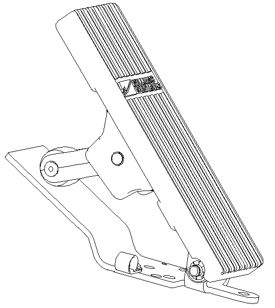

Рис. 1. Узел педали электронной дроссельной заслонки
Рис. 1. Узел педали электронной дроссельной заслонки
Узел педали электронной дроссельной заслонки
Описание и расположение
Педаль электронной дроссельной заслонки расположена на передней стороне внутри кабины и расположена в крайней правой части.
Управление
Педаль электронной дроссельной заслонки дает электронный сигнал топливной системе двигателя пропорционально углу педали электронной дроссельной заслонки.
Внимание: не пускать педаль электронной дроссельной заслонки при запуске двигателя.
Никогда не запускайте двигатель с высокой скоростью и полной нагрузкой сразу после запуска двигателя. Перед эксплуатацией при высокой скорости полной нагрузки двигатель следует прогревать и полностью смазывать.
Никогда не отпускайте двигатель на холостом ходу более 5 минут. Если больше 5 минут, выключите двигатель.
Техническое обслуживание и регулировка
1. Необходимо регулярно проверять установку педали, чтобы убедиться, что педаль надежно установлена;
2.Необходимо регулярно проверять надежность соединения жгута проводов педали замедления;
Снятие
Педаль замедления устанавливается болтами, а разъём жгута проводов педаль электронной дроссельной заслонки должна быть отсоединена перед разборкой.
Иллюстрации
